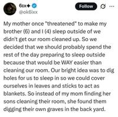

0


AMD is preparing expanded HDMI 2.1 support for Linux, following earlier delays after the HDMI Forum rejected an open source implementation of HDMI 2.1 as proprietary technology. As GamingOnLinux reports, AMD developer Harry Wentland submitted a patch series to the Linux kernel mailing list, noting that it brings "HDMI FRL support to the amdgpu display driver" and that "DSC is still being tested and will be sent out later."
A forum post on Phoronix from an AMD driver developer also said "a full implementation will ultimately be available once the patches are ready and have completed compliance testing."
Read more of this story at Slashdot.
An anonymous reader quotes a report from Bloomberg's Ashley Carman: Welcome to the modern era of podcasting in which thousands of new shows are released into the world every day with a sizable portion likely being AI-generated. Figuring out exactly which ones fall into that growing category is becoming more difficult just as the industry is starting to take this issue seriously. In only the past month or so, Amazon launched a feature that explains a product by generating a quasi-podcast, complete with co-hosts talking to each other and taking questions from users. Shout out to Business Insider reporter Katie Notopoulos for spotting this (and, naturally, demoing it with an adult diaper rash-cream). Not long ago, Nicholas Thompson, chief executive officer of the Atlantic, noted "podslop" dominated his Spotify search results when he typed in the word "Sora." This was around the time that OpenAI shut down its user-generated, AI-content-only app.
[...] All of which raises some big, difficult questions. For one, what should the listening platforms do about this incursion? As of right now, Apple Podcasts requires creators who generated a "material portion" of their show using AI to disclose it. The platform also bans misleading or deceptive content. Spotify hasn't published any specific guidelines around AI, though it maintains general rules around dangerous and misleading content. Where this conversation gets even trickier is when it comes to money. Many of these podcasts are hosted on at least one free service that allows programs to opt into their ad marketplace with zero barrier to entry, meaning these shows (and the hosting service) profit off every listen or download. Spreaker, a company owned by iHeartMedia, is the primary one to watch here. Though it tells users to disclose when they rely on AI, it still allows those shows to opt into its programmatic ad marketplace, which pays creators 60% of the revenue generated by the ads placed in their shows. It stands to reason that most of these thousands of shows don't reach many people. But in the aggregate, the ears and dollars could add up. Are the advertisers on board with being next to AI-generated content, some of which might be deemed "slop?" There's also the question of how to define "slop." Jackson of the Podcast Index and his co-host Adam Curry treat it as something listeners simply know when they hear it, while Alberto Betella, co-founder of RSS.com, defines it as "fully automated content with no human review."
Jeanine Wright, co-founder of Inception Point, rejects the debate altogether: "The people still talking about slop are still making 6-7 jokes," she said. "It's still yesterday's conversation."
Read more of this story at Slashdot.
Anthropic is reportedly nearing a roughly $1.5 billion joint venture with Blackstone, Goldman Sachs, Hellman & Friedman, and other Wall Street firms to sell AI tools to private-equity-backed companies. "The investors aim to create a company that acts as a consulting arm for Anthropic and helps teach businesses -- including the private-equity firms' portfolio companies -- how to incorporate AI across their operations," reports the Wall Street Journal. Anthropic, Blackstone, and Hellman & Friedman would each invest about $300 million, while Goldman would contribute around $150 million.
Read more of this story at Slashdot.
GameStop has made an unsolicited $56 billion cash-and-stock offer to buy eBay (paywalled; alternative source), with CEO Ryan Cohen arguing he can turn the marketplace into a far larger Amazon competitor. "EBay should be worth -- and will be worth -- a lot more money," Cohen said in an interview. "I'm thinking about turning eBay into something worth hundreds of billions of dollars." The Wall Street Journal reports: Cohen said GameStop has a commitment letter from TD Bank to provide up to $20 billion in debt financing to help make a deal possible. GameStop delivered an offer letter to eBay on Sunday and released a copy of it following the Journal's report on the details of the bid. Cohen wrote in the letter to eBay Chairman Paul Pressler that GameStop started building its eBay position on Feb. 4. It said its offer consists of 50% cash and 50% GameStop shares.
EBay said Monday morning its board and financial advisers would review GameStop's unsolicited proposal. It said there were no discussions with or outreach from GameStop before receiving the offer. Ebay added that it will review the offer "with a focus on the value to be delivered to eBay shareholders, including the value of the GameStop stock consideration and the ability of GameStop to deliver a binding, actionable proposal."
If eBay isn't receptive, Cohen said he was prepared to run a proxy fight and take the offer directly to its shareholders. The window for shareholders to nominate director candidates at eBay ahead of an annual meeting scheduled for this June has already closed, according to the company's proxy materials. Cohen told the Journal that putting his videogame retailer and eBay under one roof could create opportunities to cut costs and improve earnings. The two companies have some overlap already, including a focus on selling collectibles such as trading cards. "There is nobody who is more qualified, based on my experience, to run the eBay business," Cohen said, referencing his time at GameStop and previously Chewy, the online pet-products marketplace he co-founded.
Read more of this story at Slashdot.
Astronomers have identified 27 potential new circumbinary planets -- worlds that orbit two stars, like Star Wars' Tatooine. "To date, only about 18 circumbinary planets ... had been identified in the universe," reports the Guardian. "More than 6,000 planets have been discovered that orbit single stars, like Earth does around the sun." The Guardian reports: In a timely publication for May 4, also known as Star Wars Day, scientists have identified nearly 30 more candidate planets, whose distances range from 650 to 18,000 light years away from Earth. [...] More than half of the stars in the universe exist in binary or multiple star systems. The researchers instead used a method known as "apsidal precession," searching for a wobble between stars that orbit around and eclipse each other.
"If we monitor the exact timing of these eclipses ... that can tell us that there's something else going on in the system," said Margo Thornton, the study's lead author and a PhD candidate at UNSW. After eliminating other factors such as the rotation and gravitational pull of the two stars, the team identified 36 star systems out of 1,590 whose behavior could only be explained by a third body. For "27 of those objects, it is possible that they are planet mass," Thornton said.
More research into their spectra -- the light they emit -- was needed to formally confirm them as circumbinary planets, she said. "It's just a matter of: what is the mass of it? Is it a planet? Is it a brown dwarf? Is it a star?" The team discovered the potential planets -- which likely range from Neptune-sized to ten times heavier than Jupiter -- using data from Nasa's Transiting Exoplanet Survey Satellite, a planet-hunting space telescope that launched in 2018. The research was published in the Monthly Notices of the Royal Astronomical Society.
Read more of this story at Slashdot.
The Independent reports that "more than a third of children in the UK have found a way around age verification measures" for social media sites and other online platforms. And new research from online safety organisation Internet Matters "suggests one in six parents have helped their child to get past age verification checks, with children reporting 'tricking' platforms into thinking they are older. "
Parents also said they had caught their children drawing on facial hair in a bid to evade the technology. One mother said: "I did catch my son using an eyebrow pencil to draw a moustache on his face, and it verified him as 15 years old"... From a sample of 1,000 UK children, 46% said they believed age checks are easy to bypass, while 32% admitted to having done so.
49% of the children surveyed said they'd still encountered harmful content, according to the online safety activists. The group called the figure "unacceptable," and complained that age verification measures "are often ineffective in practice or easy to bypass."
Read more of this story at Slashdot.
"So yesterday the Devteam (it is always the Devteam) released version 5.0 of legendary and venerable rogueike compuer game NetHack," writes the Rogue-like games column @Play. "It is 39 years old..."
MilenCent (Slashdot reader #219,397) writes: In addition to play changes it's left for players to discover, this version updates the code to compile with C99, makes it much easier to cross compile the code for other systems than the one running, and now uses Lua for its dungeon generation. Happy hacking!
For new players, "Nethack 5.0 now has an optional tutorial in the early phases of the game that might help you," notes the Rogue-like games column @Play:
Three systems binaries are provided: Windows, MS-DOS and Amiga. Yes, Nethack still supports MS-DOS, and yes, it still supports classic Amiga: it explicitly supports AmigaDOS 3.0, meaning it can still run on 68000 machines... That these are the only systems they provide binaries for shouldn't be seen as an indication that these are the "most important" platforms for Nethack, it's more that, since it's entirely open source, building it yourself is entirely possible, and more expected than with most software. Nethack can be built for Linux, Windows 8-11, AmigaDOS, MacOS (I'm not sure if this includes classic Mac too but it might), Windows CE (wow), OS/2 (additional wow), BeOS, VMS and multiple Unixes... Another option is to play through public Nethack servers. The most popular of these are probably alt.org and Hardfought.
Read more of this story at Slashdot.
"Vibe coding just got a whole lot more adorable," writes Engadget:
OpenAI introduced AI-generated pets to the Codex app, its agentic tool that helps with coding. These "optional animated companions" don't do any coding themselves, but serve as a floating overlay that can tell you what Codex is working on, notify you when Codex completes a task or whether it needs your input on something. The new feature lets developers see Codex's active thread, without having to switch away from your current open app.
"The feature ships with eight built-in variations — including a cat and dog," reports Mashable. "But the more interesting play is the custom pet creator."
Users can prompt Codex directly to generate their own companion, then share it online. A quick scroll through the homepage reveals the community has already gotten to work. Current creations include Goku, Patrick Star, Microsoft's long-retired Clippy, OpenAI CEO Sam Altman, Anthropic CEO Dario Amodei, and — naturally — a goblin.
There's also Grogu, Dobby, a tiny Bob Rossi, and a "Doge-style Shiba Inu dog"...
Read more of this story at Slashdot.
The Associated Press reports:
On a March afternoon, artificial intelligence detected something resembling smoke on a camera feed from Arizona's Coconino National Forest. Human analysts verified it wasn't a cloud or dust, then alerted the state's forest service and largest electric utility. One of dozens of AI cameras installed for the utility Arizona Public Service had spotted early signs of what came to be known as the Diamond Fire. Firefighters raced to the scene and contained the blaze before it grew past 7 acres (2.8 hectares).
As record-breaking heat and an abysmal snowpack raise concerns about severe wildfires, states across the fire-prone West are adding AI to their wildfire detection toolbox, banking on the technology to help save lives and property. Arizona Public Service has nearly 40 active AI smoke-detection cameras and plans to have 71 by summer's end, and the state's fire agency has deployed seven of its own. Another utility, Xcel Energy in Colorado, has installed 126 and aims to have cameras in seven of the eight states it serves by year's end... ALERTCalifornia is a network of some 1,240 AI-enabled cameras across the Golden State that work similar to the system in Arizona....
Pano AI, whose technology combines high-definition camera feeds, satellite data and AI monitoring, has seen a growing interest in its cameras since launching in 2020. They've been deployed in Australia, Canada and 17 U.S. states, including Oregon, Washington and Texas... Last year, its technology detected 725 wildfires in the U.S., the company said... Cindy Kobold, an Arizona Public Service meteorologist, said the technology notifies them about 45 minutes faster on average than the first 911 call.
Read more of this story at Slashdot.
A new meta-analysis found nutrients in food decreased over the last 40 years, reports the Washington Post. "Many of humanity's most important crops — including wheat, potatoes, beans — contain fewer vitamins and minerals than they did a generation ago."
"The invisible culprit behind this damaging phenomenon? Carbon dioxide pollution."
Surging concentrations of carbon in the atmosphere, caused largely by burning fossil fuels, have produced potent changes in the way plants grow — from increasing their sugar content to depleting essential nutrients like zinc... "The diets we eat today have less nutritional density than what our grandparents ate, even if we eat exactly the same thing," said Kristie Ebi, a professor at the University of Washington's Center for Health and the Global Environment.
People in wealthy countries with strong health care systems will have many tools to cope with the change, experts said. But for the world's poorest and most vulnerable, the consequences could be devastating. One study concluded that by the middle of the century the phenomenon could put more than a billion additional women and children at risk of iron-deficiency anemia — a condition that can cause pregnancy complications, developmental problems and even death. Meanwhile, some 2 billion people across the globe who already suffer from some form of nutrient shortage could see their health problems grow even worse. "The scale of the problem is huge," Ebi said.
Plants depend on carbon dioxide to perform photosynthesis — but that doesn't mean they grow better when there's more carbon in the air, scientists say. A sweeping survey of changes among 32 compounds in 43 crops found that nearly every plant that humans eat is harmed by rising CO2 levels... On average, they found, nutrients have already decreased by an average 3.2 percent across all plants since the late 1980s, when the concentration of carbon dioxide in the atmosphere was about 350 parts per million.
Thanks to long-time Slashdot reader GameboyRMH for sharing the news.
Read more of this story at Slashdot.
Google's Pixel 11 lineup could see RAM cuts or lower starting configurations because of the global memory shortage, with leaks suggesting the base model may drop from 12GB to 8GB while Pro models could add 12GB versions below the current 16GB tier. The Verge reports: There will be 16GB configurations available for each, but adding a lower-spec model could mean the 16GB version is getting a price hike. However, the silver lining is that the specs from MysticLeaks also include camera upgrades and brighter displays for the Pro models. The RAM shortage is pushing other phone makers, including Samsung, to raise prices, too.
Read more of this story at Slashdot.
An anonymous reader quotes a report from Ars Technica: In a makeshift demonstration kitchen in Concord, California, cooking oil splatters in and around a frying pan, which catches fire on an unattended gas stove. Within moments, a smoke detector wails. But in this demonstration, something less common happens: An AI-driven sensor activates and wall emitters blast infrasound waves toward the source of the fire in an attempt to put it out. The science of acoustic fire suppression, which has long been known and documented in scientific literature and the press, works by vibrating oxygen molecules away from a fuel source, depriving the fire of a critical component needed for combustion. Indeed, after just a few seconds of infrasound, the tiny kitchen blaze goes out.
"We were able to not just point-and-shoot like a fire extinguisher; we figured out how to run it through ducting and distribute it like a sprinkler system," said Geoff Bruder, co-founder and CEO of Sonic Fire Tech, during the presentation. The company's goal is to replace sprinklers, which are effective at stopping fires but can also do significant water damage to a property. Sonic Fire Tech appears to be the first company trying to commercialize the science of acoustic fire suppression. Its executives have already been touring Southern California; Wednesday's event was the first in the northern half of the state.
The company aims to make this infrasound technique mainstream in both commercial (for instance, a data center, where sprinklers would damage electronics) and in-home installations, given that sprinklers are already required in all new California homes built in 2011 and later. Sonic Fire Tech also hopes to produce a backpack-based system that could be worn by wildland firefighters headed out into the field. "We are making meaningful technological improvements on a monthly basis," Stefan Pollack, a company spokesperson, emailed Ars after the event. But two experts who spoke with Ars raised serious questions about the potential for this technology to supplant traditional sprinklers in a home. They are even more skeptical as to whether the technique can be effective in an uncontrolled wildfire situation, where flames can grow very quickly. Experts are concerned that infrasound may knock down small flames but does not cool hot surfaces or wet fuel like sprinklers do, which raises the risk of re-ignition, smoldering fires, hidden fires, or blocked fires. Sonic Fire Tech has claimed third-party validation and possible NFPA 13D equivalency, but it has not publicly released full testing details.
Fire officials and outside observers also want more information about reliability, maintenance, calibration, and how system failures would be detected and communicated.
Read more of this story at Slashdot.
A Wall Street Journal opinion piece warns of "a troubling trend" in AI's growth. "Rather than selling software, some AI companies are paying their partners to use it."
It cites OpenAI's $1.5 billion joint venture with private-equity firms, Anthropic's $200 million contribution to a private-equity firm joint venture, and Google's $750 million subsidization of Gemini's adoption by consulting firms. "These agreements muddy the distinction between a company's sound growth trajectory and artificial financial engineering."
[T]he scale and structure of the recent AI deals go beyond standard incentive mechanisms... When a seller pays customers to buy its products, it is unclear if its revenue growth reflects vibrant demand or a willingness to accept subsidies.
Slashdot reader destinyland writes:
This warning comes from a prominent figure in the investing community. For six years Robert Pozen was chairman of America's oldest mutual fund company, after five years at Fidelity. An advocate for corporate governance, he's currently a lecturer at MIT's business school (and the author of the book Remote Inc.: How to Thrive at Work...Wherever You Are). "As AI companies prepare initial public offerings, investors should scrutinize their numbers closely," Pozner writes, warning about "time-limited financial support".
"In evaluating AI sales figures, analysts should consider the distorted incentives that the recent financing deals create," writes Pozner:
Private-equity firms, enticed by promised returns, might demand rapid rollouts of AI products, rather than ensuring their orderly and safe development. Portfolio companies of private-equity firms may embrace AI tools not because they are needed but because adoption is mandated by their owners. Consultants may favor one set of AI models based on the subsidy instead of the merits.
If guarantees and subsidies are major factors in the rapid adoption of AI tools, investors should be skeptical of AI companies' revenue projections. Many of their customers enticed by consultants will stop paying full price when the financial incentives are gone. Many of the portfolio companies of private-equity firms could back away from selected AI tools once these joint ventures expire. The challenge with evaluating these AI financing deals is the lack of transparency. At present, AI vendors don't separate revenue driven by subsidies or joint ventures from standard sales.
The lesson from the telecom debacle is that financial engineering can obscure, for years, the difference between real customer demand and demand driven by incentives. When AI companies begin to finance their own product distribution, guaranteeing returns to investors and subsidizing sales, it's a signal for investors to dig deeper.
Investing in an AI company? Ask what percentage of enterprise revenue is coming from subsidized channels or joint ventures, Pozner suggests. And the renewal/retention rate for customers not supported by subsidies or joint ventures...
Read more of this story at Slashdot.
Age verification became mandatory for chat access on Roblox in January — and Friday morning Quartz reported it's apparently impacted the company's financials:
Roblox cut its full-year 2026 bookings forecast by roughly $900 million at the midpoint on Thursday, blaming stronger-than-expected headwinds from its mandatory age-verification rollout on an audience that skews heavily toward children and teenagers. Full-year 2026 bookings are now projected at $7.33 billion to $7.60 billion, a range that sits roughly $900 million below the prior guidance of $8.28 billion to $8.55 billion; analysts had expected $8.38 billion, according to Yahoo Finance. Roblox stock fell almost 22% in premarket trading....
Daily active users rose 35% year over year to 132 million, while hours engaged climbed 43% to 31 billion hours... Daily Active Users and hours engaged fell below forecasts of 143.8 million and 33.68 billion, respectively, according to Yahoo Finance... Users who have not completed age checks have faced restricted communication features, and the process has weighed on the platform's ability to bring in new users. Russia's blocking of the platform, which took effect in December 2025, added further drag on user growth, according to Yahoo Finance. As of the end of the first quarter, 51% of global daily active users had completed age verification, with 65% of U.S. users having done so, Roblox said....
The safety push has come with legal costs. Roblox accrued $57 million in the first quarter for settlements and settlement proposals with certain states over youth-related consumer protection and digital safety matters, with payments structured over multiple years, the company said.
Roblox acknowledged in a letter to shareholders that "our aggressive push to enhance safety lowers our expectations for topline growth in 2026." But they argued that it also "makes our platform fundamentally better and amplifies the long-term growth potential of Roblox through more effective content targeting, tailored communication experiences, and improved community sentiment."
Read more of this story at Slashdot.
A startup south of Austin is using robots to build homes out of clay pulled directly from the ground, reports a local news station:
The materials are gathered on site, mixed, and placed on a build plate. From there, a robot lowers from above, picks up the clay with a claw, carries it to the wall and drops it into place. Later, the same robot switches tools, using a hammer attachment to pound the material into shape. "It's kind of trying to replicate how a human might build an adobe house," said software engineer Anastasia Nikoulina... Using machine learning, the system constantly evaluates the wall, adjusting how it builds to create a flat, solid surface...
The project is underway at Proto-Town, a ranch between Lockhart and Luling where startups test new technologies, from anti-drone systems to nuclear reactors. The company plans to build their next home on the property, with hopes to do more than 20 homes over the next year.
Read more of this story at Slashdot.
Akash Sriram / Reuters : Duolingo reports Q1 revenue up 27% YoY to $292M, vs. $288.5M est., bookings up 14% to $308.5M, and expects slower growth in Q2; DUOL drops 12%+ after hours — Duolingo (DUOL.O) posted strong first-quarter results but signaled a more measured growth trajectory ahead, as the language-learning …
Bloomberg : Musk v. Altman: Greg Brockman testifies that his OpenAI stake is now worth ~$30B; a Musk attorney asks why he hasn't donated $29B to OpenAI's nonprofit arm — OpenAI co-founder and President Greg Brockman testified that his stake in the startup is now worth almost $30 billion …
Jaspreet Singh / Reuters : Palantir reports Q1 revenue up 85% YoY to $1.63B, vs. $1.54B est., US government revenue up 84% to $687M, and US commercial revenue up 133% to $595M — Palantir Technologies (PLTR.O) beat Wall Street estimates for first-quarter revenue on Monday, driven by rising demand for its data analytics software …
Nicola M White / Bloomberg : Elon Musk agrees to pay $1.5M to settle SEC allegations that he cheated Twitter shareholders in 2022 by failing to disclose the 5%+ stake he had in the company — Elon Musk agreed to settle Securities and Exchange Commission allegations that he cheated Twitter shareholders out of millions …
Jonathan Vanian / CNBC : Pinterest reports Q1 revenue up 18% YoY to $1B, vs. $966M est., MAUs up 11% YoY to 631M, and forecasts Q2 revenue above estimates; PINS jumps 17%+ after hours — Pinterest reported first-quarter earnings on Monday that beat on the top and bottom lines. Shares soared 17% after the report.
Tim Fernholz / TechCrunch : Musk v. Altman: Stuart Russell, Musk's only AI expert witness, warned of AI risks but his concerns about AI's existential threats were excluded by the judge — When do we take AI doomers seriously? — That's a key subtext of Elon Musk's attempt to shut down OpenAI's for-profit AI business.
New York Times : Sources: the Trump administration is discussing an EO to create an AI working group to examine AI oversight procedures, including vetting models before release — The Trump administration, which took a noninterventionist approach to artificial intelligence, is now discussing imposing oversight …
New York Times : Former Trump and Biden AI advisers Dean Ball and Ben Buchanan urge bipartisan action on AI security risks, including tighter export controls and safety audits — We come from different parties and have guided artificial intelligence policy under very different presidents.
Jack Clark / Import AI : Anthropic co-founder explains why there's a 60%+ chance of AI systems autonomously building their successors by 2029 and the consequences of automated AI R&D — The first step towards recursive self improvement — Welcome to Import AI, a newsletter about AI research.
Mark Gurman / Bloomberg : Sources: Apple prepares a “Create a Pass” feature for iOS 27, which lets users take a QR code and generate a custom pass around it for concerts and other venues — Apple Inc. is preparing a new “Create a Pass” feature for its next major iPhone software update …
Dylan Martin / CRN : Intel taps Alex Katouzian, an ex-Qualcomm EVP, to lead Client Computing & Physical AI group, and names Pushkar Ranade as CTO, after serving on an interim basis — With the hiring of Alex Katouzian, who was responsible for mounting a new challenge against Intel's PC dominance …
Christopher Mims / Wall Street Journal : Ex-iRobot CEO Colin Angle launches Familiar Machines & Magic and unveils Familiar, a dog-like, “emotionally intelligent” robot that reacts to owner's feelings — The inventor behind the world-famous robot vacuum is now designing robots that form an emotional bond with their owners
Bloomberg : Nearly 20 US state-run health insurance exchanges include ad trackers that send user data like race and citizenship info to companies like Meta, TikTok, Google — Nearly all of the 20 state-run health insurance exchanges in the US have added advertising trackers that transmit user activity …
Suzanne McGee / Reuters : Sources: more than two dozen prediction-market ETFs have been pushed back as the SEC seeks more information; they were originally expected to launch this week — More than two dozen exchange-traded funds tied to elections, recessions, tech layoffs and other real-world events …
Subrat Patnaik / Bloomberg : Filing: Blackstone's data center acquisition vehicle seeks to raise as much as $1.75B in its IPO, and will target newly built data centers valued at $250M-$1.5B — Blackstone Digital Infrastructure Trust Inc. is seeking to raise as much as $1.75 billion in a US initial public offering …